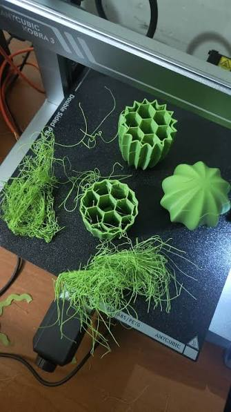

KAPITOLA 13
ŘEŠENÍ PROBLÉMŮ
Troubleshooting
Něco se pokazilo? Přehledná tabulka desítek běžných problémů, jejich příčin a krok za krokem řešení.
Jak tuto kapitolu používat: Klikněte na název problému který vidíte — rozbalí se příčiny a řešení. Problémy jsou seřazeny do skupin dle kategorie. Pokud tiskárna vůbec nereaguje nebo problém přetrvává po všech krocích — kontaktujte podporu Anycubic: support.anycubic.com nebo Zendesk Support. Připravte SN číslo tiskárny (Nastavení → Informace o zařízení).
Přejít na skupinu problémů
Problémy s přilnavostí první vrstvy
Bed Adhesion Failure (model se nelepí k podložce)
První vrstva se odlepuje, výtisk se pohybuje nebo vůbec nepřilne
›

Příčiny
- Tryska příliš vysoko nad podložkou (velký Z-offset)
- Mastná nebo znečištěná tisková podložka
- Studená tisková podložka nebo špatná teplota
- Příliš rychlá první vrstva
- Špatně nakalibrovaný mesh leveling
- Filament příliš starý nebo vlhký
- ABS/ASA bez enclosure — warping od průvanu
Řešení — krok za krokem
- Odmastěte podložku IPA 90 % a papírovým ubrouskem
- Snižte Z-offset o 0,05–0,1 mm (první vrstva musí být viditelně přimáčknutá)
- Spusťte znovu Auto-leveling (ABL) — Kobra X kalibruje automaticky před tiskem
- Snižte rychlost první vrstvy na 25–35 mm/s
- Zvyšte teplotu podložky o 5–10 °C (PLA: 60 °C, PETG: 80 °C)
- Zvyšte teplotu trysky pro první vrstvu o +5 °C
- Pro ABS/ASA: použijte enclosure nebo zakryjte průvan
- Naneste tenkou vrstvu lepidla (Pritt, UHU nebo Kores) jako adhezní pomůcku
KOBRA X: Auto-leveling probíhá automaticky před každým tiskem — pokud selhává nebo dává nerovnoměrné výsledky, zkontrolujte čistotu senzoru BLTouch a nastavte manuální Z-offset v menu Nastavení → Z-offset.
Model se lepí příliš pevně
Výtisk nejde odlepit, poškozuje podložku při odstraňování
›

Příčiny
- Tryska příliš nízko — první vrstva přeplněná
- Příliš vysoká teplota podložky
- PETG na smooth PEI bez separační vrstvy — PETG se chemicky váže k PEI
- Výtisk odstraňován horký (podložka ještě teplá)
Řešení
- Počkejte až podložka zcela vychladne — PEI se při chlazení mírně smršťuje a model uvolní sám
- Zvyšte Z-offset o 0,05 mm (méně přimáčknutá první vrstva)
- Pro PETG: naneste tenkou vrstvu lepicí tyčinky (Pritt, UHU nebo Kores) jako separační vrstvu na PEI
- Snižte teplotu podložky o 5 °C
- Nikdy nepoužívejte kovové nástroje s ostrým hrotem — použijte pružnou plastovou špachtle
KOBRA X: PETG na textured PEI podložce Kobry X přilne extrémně pevně. Vždy používejte separační vrstvu (lepicí tyčinka) pro PETG — bez ní riskujete poškození PEI povrchu.
Elephant foot (sloní patka)
Spodní vrstvy jsou rozlité a přesahují okraje modelu
›

Příčiny
- Tryska příliš nízko — první vrstva je přeplněná
- Příliš vysoká teplota podložky — plast tuhne pomalu
- Příliš nízká teplota chlazení nebo vypnutý ventilátor
- Příliš vysoký flow rate
Řešení
- Zvyšte Z-offset o 0,05–0,1 mm
- Snižte teplotu podložky o 5 °C
- Zapněte part cooling ventilátor od 2. vrstvy (ne od 1. — první vrstva potřebuje teplo pro přilnutí)
- V OrcaSliceru zapněte „Elephant Foot Compensation" — hodnota 0,1–0,2 mm
- Zkontrolujte Flow Rate — snižte o 2–3 % pokud je příliš vysoký
Uneven First Layer (nerovnoměrná první vrstva)
Na některých místech přimáčknutá, jinde mezery — „vlnění" po ploše
›

Příčiny
- Nedostatečný mesh leveling — podložka je prohnutá nebo nakloněná
- Znečištěný nebo poškozený BLTouch/indukční senzor
- Poškrábaná nebo deformovaná tisková podložka
- Uvolněný spoj mezi podložkou a heatbedem
- Špinavé nebo opotřebené vodicí lišty osy Z
Řešení
- Spusťte Auto-leveling znovu — Kobra X dělá 25-bodový mesh
- Očistěte senzor leveling suchým hadříkem
- Zkontrolujte, zda magnetická podložka správně sedí a není pod ní vzduch nebo nečistoty
- Tiskněte Bed Level Test (viz 12.01) a vizuálně zkontrolujte rovnoměrnost
- Pokud je podložka trvale nerovná — zvažte výměnu za novou PEI desku
KOBRA X: Mesh leveling se kalibruje automaticky při každém spuštění tisku — nemusíte ho spouštět ručně. Pokud výsledky nejsou stabilní, zkontrolujte upevnění senzoru a případně aktualizujte firmware.
Stringing a nánosy
Stringing (pavučiny)
Tenká vlákna plastu táhnoucí se mezi částmi modelu při přesunech
›

Příčiny
- Příliš vysoká teplota trysky — plast je příliš řídký
- Nedostatečná retrakce — plast nevtahuje zpět při přesunech
- Pomalá rychlost cestování (Travel Speed)
- Vlhký filament — vytváří páru a tekutý plast
- Příliš vysoký flow rate
- Zakázáno „combing" nebo špatné nastavení avoid crossing perimeters
Řešení
- Snižte teplotu trysky o 5 °C (zkuste Temperature Tower pro nalezení optima)
- Zvyšte retrakci o 0,5 mm (Kobra X Direct Drive: výchozí 0,5–2 mm)
- Zvyšte Travel Speed na 150–200 mm/s
- Zapněte „Avoid crossing perimeters" v OrcaSliceru
- Vysušte filament — vlhký PETG a Nylon stringují vždy
- Snižte Flow Rate o 2–3 %
KOBRA X — Direct Drive: Kobra X používá přímý náhon (Direct Drive, motor extrudéru přímo nad tryskou). Optimální retrakce je 0,5–2 mm při 30 mm/s. Hodnoty z tutoriálů pro Bowden (4–7 mm) jsou pro Kobru X příliš vysoké.
Blobs a zits (kapky na povrchu)
Drobné kapky nebo pupínky plastu na vnějším povrchu stěn
›

Příčiny
- Špatné nastavení seam (spoje vrstev) — vždy na stejném místě
- Přebytečný tlak v trysce při startu nové vrstvy
- Příliš pomalá rychlost vnějšího perimetru
- Restart extruze po retrakci přidá příliš plastu
- Koasting (coasting) není nastaven nebo je příliš agresivní
Řešení
- Nastavte Seam Position na „Rear" nebo „Aligned" — seam se skryje nebo bude rovný
- Povolte Wipe before outer wall v OrcaSliceru
- Snižte Extra Restart Distance na zápornou hodnotu (−0,1 až −0,2 mm)
- Zapněte nebo upravte Coasting (0,2–0,5 mm³)
- Zvyšte rychlost vnějšího perimetru na 40–60 mm/s (příliš pomalé = více ooze)
Oozing (vytékání při přesunech)
Plast vytéká z trysky při pohybech bez tisku, zanechává stopy
›

Příčiny
- Příliš vysoká teplota — plast je příliš tekutý
- Nedostatečná retrakce
- Dlouhá vzdálenost přesunů bez retrakce
- Příliš pomalé přesuny
- Vlhký filament s bublinkami páry
Řešení
- Snižte teplotu trysky o 5–10 °C
- Zvyšte retrakci o 0,5–1 mm
- Zapněte „Retract on layer change" v OrcaSliceru
- Zvyšte Travel Speed na 180–220 mm/s
- Zapněte Combing mode — tryska cestuje uvnitř modelu kde ooze nevadí
Problémy s kvalitou povrchu
Ghosting / Ringing (vlnění povrchu)
Vlnovité opakující se vzory na povrchu za ostrými hranami
›

Příčiny
- Příliš vysoká rychlost tisku — vibrace rámu
- Volné šrouby rámu nebo spojů
- Volné nebo nerovnoměrně napnuté řemeny
- Tiskárna stojí na nestabilním nebo lehkém stole
- Mechanická rezonance při specifické frekvenci pohybu
Řešení
- Snižte rychlost tisku o 20–30 %
- Utáhněte všechny šrouby rámu (zejména spoje rohů)
- Zkontrolujte napětí řemenů — měly by znít jako nízká struna
- Přidejte anti-vibrace podložky pod nohy tiskárny
- Kobra X má Input Shaping — zkontrolujte kalibraci v menu tiskárny nebo přes Anycubic Slicer
- Snižte Jerk / Acceleration v nastavení tiskárny
KOBRA X — Input Shaping: Kobra X má zabudovanou kompenzaci rezonancí (Input Shaping / Resonance Compensation). Pokud ghosting přetrvává, rekalibrujte Input Shaping z menu tiskárny — kalibrace trvá cca 5 minut.
Layer shifting (posunuté vrstvy)
Vrstvy výtisku jsou posunuté v ose X nebo Y — model vypadá „sklouznutý"
›

Příčiny
- Volný řemen osy X nebo Y — motor ztrácí kroky
- Přehřátý motor — ztrácí výkon
- Příliš vysoká rychlost nebo akcelerace
- Model se odlepil od podložky a zachytil tiskovou hlavu
- Mechanická překážka v pohybové dráze (kabel, šroub)
- Uvolněná kladka nebo ozubené kolo na motorovém hřídeli
Řešení
- Zkontrolujte a dotáhněte napnutí řemenů X a Y
- Snižte rychlost tisku a akceleraci (Acceleration max 2000–3000 mm/s²)
- Zkontrolujte dráhu pohybu — žádné kabely, šrouby ani cizí předměty
- Zkontrolujte uchycení kladek a ozubených kol na motorových hřídeli (malý šroub Allen)
- Ujistěte se, že model dobře drží na podložce — odlepení způsobí kolizi
- Zlepšete chlazení motorů nebo snižte proudy driverů (pokročilé)
Z-wobble (vlnky na Z ose)
Pravidelné horizontální vlnky na povrchu stěn opakující se každou vrstvu
›

Příčiny
- Ohnutý nebo excentrický trapézový šroub Z osy
- Špatně seřízená matice trapézového šroubu (vůle)
- Příliš napnutá nebo volná spojka motoru Z
- Nedostatečně namazaný trapézový šroub
- Pohyblivý X-gantry není rovnoběžný s podložkou
Řešení
- Namažte trapézový šroub lithiovou vazelínou po celé délce
- Zkontrolujte, zda šroub není viditelně ohnutý — při rotaci by neměl být výkyv
- Zkontrolujte spojku motoru — musí být pevná, bez vůle
- Povolte matici trapézového šroubu (anti-backlash nut) a znovu utáhněte bez nadměrné síly
- Vyrovnejte X-gantry do rovnoběžnosti s podložkou (oba Z motory na stejné výšce)
Visible Layer Lines (příliš viditelné vrstvové linie)
Výtisk vypadá „schodovitě", vrstvy jsou velmi výrazné
›

Příčiny
- Příliš velká výška vrstvy pro danou trysku
- Špatně nastavený Flow Rate — vrstvy jsou tenčí nebo tlustší než mají být
- Nekonzistentní extruze (kolísání průtoku)
- Normální vlastnost FDM tisku — při šikmých plochách jsou vrstvy vždy viditelné
Řešení
- Snižte výšku vrstvy na 0,1–0,15 mm pro detail (pomalejší, ale hladší)
- Kalibrujte Flow Rate pomocí Flow Calibration Cube (viz 12.01)
- Pro post-processing: brusný papír 400→800→1200 a primer nebo acetone vapor (ABS)
- Použijte Ironing pro vršek modelu — výrazně uhladí horní plochy
Warping (deformace výtisku)
Rohy nebo celá základna výtisku se odlamuje nebo kroutí od podložky
›

Příčiny
- Materiál se smršťuje při chladnutí (ABS, ASA, Nylon)
- Studený vzduch fouká na výtisk během tisku
- Příliš nízká teplota podložky
- Špatná adheze první vrstvy
- Velký plochý model bez enclosure
Řešení
- Použijte enclosure pro ABS/ASA — teplý vzduch uvnitř dramaticky snižuje warping
- Zvyšte teplotu podložky (ABS: 100–110 °C, max Kobry X je 100 °C)
- Naneste ABS juice nebo lepidlo na podložku
- Přidejte Brim 8–15 mm pro velké ploché objekty
- Vypněte part cooling ventilátor nebo výrazně snižte jeho výkon
- Eliminujte průvan — zavřete okna a dveře
KOBRA X — heatbed limit: Max. teplota vyhřívané podložky Kobry X je 100 °C. ABS a ASA ideálně potřebují 110 °C — při 100 °C je warping vyšší. Kompenzujte enclosem a lepidlem.
Under-extrusion (nedostatečná extrúze)
Under-extrusion (mezery ve stěnách)
Stěny výtisku mají mezery, díry nebo jsou průsvitné — tiskárna netlačí dost plastu
›

Příčiny
- Příliš nízká teplota trysky — plast je příliš viskózní
- Příliš vysoká rychlost tisku — extrudér nestíhá
- Zanešená nebo opotřebená tryska
- Příliš nízký Flow Rate
- Opotřebení nebo skluz extrudérového ozubeného kola
- Ucpaná nebo zkroucená PTFE trubice
- Vlhký filament — pára snižuje průtok
Řešení
- Zvyšte teplotu trysky o 5–10 °C
- Snižte rychlost tisku o 20 %
- Proveďte Cold Pull pro vyčištění trysky (viz 11.03)
- Kalibrujte Flow Rate — tiskněte stěnový cube a změřte tloušťku
- Zkontrolujte extrudér — ozubené kolo musí filament pevně sevřít bez prokluzování
- Zkontrolujte PTFE trubici na kroucení nebo ucpání
- Vysušte filament pokud tiskl vlhký
Grinding / Stripping filamentu
Extrudér brousí filament, slyšíte klikání nebo praskání, z extrudéru padají piliny
›

Příčiny
- Ucpaná tryska — extrudér tlačí proti odporu a brousí filament
- Příliš vysoká retrakce — filament se brousí při každém vtažení
- Příliš nízká teplota trysky
- Příliš nízká přítlačná síla extrudéru na filament
- Opotřebené ozubené kolo extrudéru
Řešení
- Prvně vyčistěte trysku — Cold Pull nebo výměna
- Snižte retrakci o 0,5–1 mm
- Zvyšte teplotu trysky o 5–10 °C
- Zkontrolujte přítlačnou pružinu extrudéru — musí pevně sevřít filament
- Vyčistěte zbytky broušeného filamentu z extrudérového ozubeného kola (měkký kartáček)
- Pokud kolo je viditelně opotřebené — vyměňte extrudér
Clogging / Jam — ucpání trysky
Filament přestal vytékat nebo tiskárna „tiskne vzduch" — tryska je ucpaná
›

Příznaky ucpání
- Filament se nepodává nebo podává nepravidelně
- Extrudér vydává klikání nebo praskání (grinding)
- Tisk je slabý, průhledný nebo přerušovaný
- Tryska nevytlačí nic ani při správné teplotě
- Pod tryskou visí tenká vlákna místo plného proudu plastu
Příčiny
- Vlhký filament — bubliny páry karbonizují plast uvnitř trysky
- Příliš nízká teplota — plast se neroztaví celý
- Záměna materiálů bez purge (PLA přes Nylon)
- Heat creep — plast změknul příliš vysoko nad tryskou
- PTFE trubice bez dosednutí — mezera = hromadění plastu
- Prach a nečistoty na filamentu
Rychlé řešení — Cold Pull
- Zahřejte na 200–220 °C (PLA) nebo 230–250 °C (PETG/ABS) a extrudujte 20–30 mm
- Zchlaďte na 85–95 °C (PLA) nebo 100–110 °C (PETG) — nechte aktivně chladit ventilátorem
- Pevně uchopte filament a prudce ho vytáhněte jedním tahem přímo nahoru
- Zkontrolujte odlitek — tmavé záteky = ucpání stále přetrvává, světlý = čistý
- Opakujte 2–5× dokud vychází čistý odlitek bez tmavých usazenin
- Ověřte průtok — extrudujte 20 mm a zkontrolujte rovnoměrný výtok
Pokud Cold Pull nestačí
- Jehlou (∅ 0,3 mm) prostrčte otvor trysky za tepla (220–240 °C)
- Extrudujte 50 cm čisticího filamentu (cleaning filament)
- Vyměňte trysku — 5 minut, za tepla, klíč 7 mm
KOBRA X — výměna trysky za tepla: Zahřejte hotend na 180–200 °C. Klíč 7 mm na trysku, druhý klíč přidržte heat block. Nikdy studenou trysku — závit se zlomí. Podrobný postup cold pull viz 11.03.
Tiskárna netlačí filament
Extrudér se pohybuje, ale z trysky nevychází žádný plast
›

Příčiny
- Filament dojel nebo se přetrhl v trubici
- Tryska kompletně ucpaná
- Filament se zasekl v extrudéru nebo PTFE trubici
- PTFE trubice se uvolnila z fittingu
- Extrudérový motor nefunguje (elektrický problém)
- Špatně zvolený kanál filamentu (Kobra X má 4 kanály)
Řešení
- Zkontrolujte zda filament stále vede do extrudéru — vizuálně nebo odstraňte kryty
- Zkontrolujte PTFE fittingy — trubice musí sedět pevně na obou koncích
- Manuálně extrudujte filament z menu tiskárny při zahřáté trysce
- Pokud motor se točí ale netlačí — zkontrolujte ozubené kolo a přítlačnou pružinu
- Vyčistěte nebo vyměňte trysku
- Kobra X: ověřte v menu že je vybrán správný kanál filamentu (1–4)
KOBRA X — multi-filament: Kobra X má 4 kanály filamentu. Zkontrolujte v menu tiskárny, že je aktivní správný kanál (1–4) odpovídající cívce která je zasunutá. Špatný kanál = extrudér tlačí prázdno.
Over-extrusion (nadměrná extrúze)
Over-extrusion (tučné stěny, zalepené díry)
Výtisk má tučné stěny, otvory jsou zaplněné, povrch je nerovný s valy plastu
›

Příčiny
- Příliš vysoký Flow Rate
- Příliš vysoká teplota — plast je příliš tekutý a roztéká se
- Špatně kalibrovaný E-steps extrudéru
- Průměr filamentu zadán menší než je reálný (1,75 mm vs. skutečnost)
Řešení
- Snižte Flow Rate o 2–5 % a tiskněte Flow Calibration Cube
- Změřte skutečný průměr filamentu posuvným měřítkem na 3 místech — zadejte průměr do sliceru
- Snižte teplotu trysky o 5 °C
- Kalibrujte E-steps extrudéru (extrudujte 100 mm a změřte skutečnou délku)
- Pro díry a otvory: použijte „Hole Horizontal Expansion" v OrcaSliceru
Problémy s podporami
Podpěry se lámají při odstraňování
Podpory nelze odlepit, trhají se a poškozují povrch modelu
›

Příčiny
- Příliš malá Z-distance (vzdálenost podpory od modelu)
- Příliš vysoká Interface density (hustota kontaktní vrstvy)
- Použity normální podpory místo Tree supports
- Příliš vysoká teplota → podpory se sváří s modelem
Řešení
- Zvyšte Z-distance na 0,2–0,3 mm (větší mezera = snazší odlepení)
- Snižte Interface density na 50–60 %
- Přepněte na Tree (Organic) supports — snáze se odstraňují
- Snižte teplotu trysky při tisku podpor o 5 °C
- Odstraňujte podpory po vychladnutí — za tepla se hůře lámají
Support Scarring (podpory zanechávají velké jizvy)
Po odstraňování podpor jsou na modelu viditelné hrubé stopy a nerovnosti
›

Příčiny
- Příliš malá Z-distance — podpory se vrůstají do modelu
- Špatný typ podpor pro danou geometrii
- Příliš mnoho kontaktní plochy (Interface layers)
- Materiál podpory a modelu jsou totožné — příliš silná vazba
Řešení
- Zvyšte Z-distance na 0,25–0,35 mm
- Snižte počet Interface Layers na 1–2
- Použijte PVA podpory (rozpustné ve vodě) pro složité modely — vyžaduje multi-material
- Otočte model v sliceru aby co nejméně ploch vyžadovalo podpory
- Zbytkové jizvy vybruste jemným brusným papírem 400–800
Podpory se nepřipojily k modelu
Podpory tisknou do vzduchu nebo se odlomily před dosažením místa kde měly podpírat
›

Příčiny
- Špatná adheze podpory k podložce
- Příliš vysoké podpory s tenkým základem
- Podpory generovány příliš daleko od modelu (XY vzdálenost)
- Model se pohnul nebo odlepil a znetvořil geometrii
Řešení
- Přidejte Brim pro podpory (Support Brim) — zlepší adhezi základny podpor
- Snižte XY-distance podpor na 0,4–0,6 mm
- Přejděte na Tree supports — mají lepší stabilitu než mřížkové
- Zkontrolujte adhezi modelu — podpora nemůže stát pokud model tančí
Problémy s mosty a převisy
Bridge Sagging (visící vlákna pod mostem)
Přemostění (bridge) visí dolů, má vlákna nebo se propadá
›

Příčiny
- Příliš slabé chlazení — plast nestihne ztuhnout
- Příliš vysoká teplota trysky
- Příliš pomalá rychlost bridging
- Příliš dlouhý most — fyzické limity materiálu
- Vlhký filament — pára brání správnému tuhnutí
Řešení
- Zvyšte part cooling ventilátor na 100 % pro bridging
- Snižte teplotu trysky o 5–10 °C pro bridging vrstvy
- Zvyšte Bridge Speed na 40–60 mm/s (rychlejší = kratší čas ve vzduchu)
- Snižte Bridge Flow Rate na 80–90 % — méně plastu = méně průvěsu
- Pro mosty delší než 50–60 mm přidejte podpory
Overhang Sagging (prověšující se převisy)
Šikmé plochy výtisku se prověšují nebo mají hrubý schodovitý povrch
›

Příčiny
- Nedostatečné chlazení převisu
- Úhel překračuje schopnosti tiskárny bez podpor (typicky >55°)
- Příliš vysoká teplota trysky
- Vysoká vlhkost filamentu
- Přidané chlazení nestačí — weak part cooling
Řešení
- Zvyšte part cooling na 100 %
- Snižte rychlost tisku pro plochy s převisem
- Snižte teplotu trysky o 5 °C
- Otočte model v sliceru — méně kritické převisy dolů
- Pro úhly nad 55° přidejte podpory nebo redesignujte model (fazetování hran)
- Tiskněte Overhang Test pro zjištění limitu vaší tiskárny
Problémy s filamentem
Filament se přelámal v trubici nebo extrudéru
Tisk se zastavil — filament se zlomil uvnitř stroje a nejde vytáhnout
›

Příčiny
- Příliš starý nebo křehký filament (zejména PLA po roce)
- Vlhký filament — absorbovaná voda způsobuje křehkost
- Příliš ostrý ohyb PTFE trubice
- Přelomení při zaseknutí v extrudéru
Řešení
- Zahřejte trysku na teplotu filamentu a zkuste pomalu vytáhnout zlomený kus
- Pokud nejde vytáhnout — demontujte PTFE fitting a trubici pro přístup
- Zasuňte nový filament z druhé strany aby vytlačil starý kus
- Po vyčištění zkontrolujte PTFE trubici — příliš ostrý ohyb rovnejte nebo vyměňte trubici
- Staré a křehké filamenty před tiskem zkuste ohne — pokud praskají, vyhoďte je nebo vysušte
KOBRA X — 4 trubice: Kobra X má 4 oddělené PTFE trubice. Přelomení v jedné trubici neovlivní ostatní kanály. Označte trubici číslem před demontáží — záměna kanálů způsobí problémy s podáváním.
Filament Runout (dojel filament během tisku)
Tisk se zastavil (nebo pokračoval bez plastu) — cívka je prázdná
›

Příčiny
- Cívka se vyprázdnila — filament dojel
- Senzor filamentu selhal nebo není aktivní
- Filament se přetrhl na cívce před senzorem
- Filament se zamotal na cívce (tangla)
Řešení
- Kobra X má senzor filamentu — zkontrolujte, že je aktivní v menu nastavení
- Vyměňte cívku — nový filament zasuňte a pokračujte tiskem (Resume Print)
- Pokud tisk pokračoval bez plastu: odstraňte poškozené vrstvy, opravte model v CAD a vytiskněte zbývající část
- Zamotaný filament: nikdy neříznout — postupně odmotávejte od konce a sledujte kde je smyčka
- Prevence: sledujte zbývající filament před dlouhými tisky
Vlhký filament (praskání, bubliny)
Slyšíte praskání nebo syčení při tisku, výtisk má bublinky nebo matný povrch
›

Příčiny
- Filament absorboval vzdušnou vlhkost (hygroskopický materiál)
- PETG, Nylon a TPU jsou extrémně citlivé na vlhkost
- Skladování bez ochrany v prostředí s vysokou vlhkostí (nad 50 %)
- Otevřená cívka ležela bez ochrany déle než 24–48 hodin
Řešení
- Vysušte filament v sušičce nebo sušičce potravin (viz 10.05)
- PLA: 45–50 °C / 4–6 hodin. PETG: 55–65 °C / 4–6 hodin. Nylon: 70–80 °C / 8–12 hodin
- Po sušení tiskněte přímo ze sušičky (sušičky jako SUNLU S1, Creality Space Pi nebo eSUN eBOX mají otvor pro filament)
- Uskladňujte filament v zip-lock sáčku nebo dry boxu s silikagelovým sušidlem
- Přiložte mini hygrometr — vlhkost pod 15 % je cíl
Teplotní problémy
Thermal Runaway Error (chyba tepelného úniku)
Tiskárna zastavila tisk s chybou „Thermal Runaway" nebo „Heating Error"
›

Příčiny
- Termistor se uvolnil nebo je poškozený — hlásí chybnou teplotu
- Topné těleso (heater cartridge) selhalo
- Slabý kontakt konektorů termistoru nebo topení
- Part cooling ventilátor fouká přímo na hotend a brání ohřevu
- Průvan v místnosti ochlazuje trysku pod nastavenou teplotu
Řešení
- Zkontrolujte fyzické uchycení termistoru v heat blocku — musí být pevně přichycen kaplán páskou
- Zkontrolujte konektory termistoru a topení na řídicí desce — musí pevně sedět
- Změřte odpor termistoru (100 kΩ při pokojové teplotě pro NTC 100K) — pokud je jiný, vyměňte
- Zkontrolujte topné těleso — multimetrem změřte odpor (typicky 10–15 Ω)
- Thermal Runaway Protection je bezpečnostní funkce — neignorujte ji a nevypínejte v firmware
KOBRA X — bezpečnost: Thermal Runaway je kritická bezpečnostní ochrana. Pokud se chyba opakuje po kontrole konektorů, kontaktujte Anycubic podporu — může jít o defektní díl pod zárukou.
Tryska se neohřeje na teplotu
Hotend se zahřívá pomalu nebo nedosáhne nastavené teploty
›

Příčiny
- Selhávající topné těleso (heater cartridge) — snížená výkonnost
- Uvolněný nebo špatný kontakt konektoru topení
- Příliš silné foukání ventilátoru na hotend
- Poškozená izolace heat blocku (silikonová ponožka)
Řešení
- Zkontrolujte konektory topení na řídicí desce — pevný kontakt
- Zkontrolujte silikonovou ponožku heat blocku — pokud chybí nebo je poškozená, teplo uniká
- Změřte odpor topného tělesa multimetrem (10–15 Ω) — pokud je nižší, vyměňte
- Ověřte, že hotend ventilátor nefoukne přímo na topnou část (ale na heat sink)
Heat Creep (ucpání v chladné zóně)
Filament se zasekne nad tryskou v heat break — ucpání ve studené části hotendu
›

Příčiny
- Hotend ventilátor nefunguje nebo má slabý výkon
- PTFE trubice nedosahuje až k trysce — mezera = tepelný most
- Tisk PLA v uzavřeném krytu bez ventilace — přehřívání chladné zóny
- Příliš nízká rychlost tisku — plast stojí v hotendu příliš dlouho
Řešení
- Zkontrolujte hotend ventilátor — musí vždy běžet při zahřáté trysce
- Zkontrolujte PTFE trubici — musí dosáhnout až na doraz k trysce bez mezery
- Pro tisk PLA v enclosure: otevřete kryt nebo zapněte ventilaci dovnitř
- Zvyšte minimální rychlost tisku — tryska musí neustále plynule extrudovat
- Po heat creep ucpání: demontujte hotend za tepla, vyčistěte, zkontrolujte PTFE a sestavte
KOBRA X — PLA a enclosure: Nikdy netiskněte PLA v uzavřeném krytu bez ventilace. Zahřátý vzduch uvnitř způsobuje heat creep. Pro PLA: otevřete kryt nebo instalujte ventilátor pro výměnu vzduchu uvnitř krytu.
Problémy s tiskárnou (hardware)
Auto-leveling selhává nebo dává chybu
Tiskárna hlásí chybu při kalibraci podložky nebo mesh je extrémně nepravidelný
›

Příčiny
- Senzor leveling je znečištěný nebo poškozený
- Podložka je extrémně nakloněná — mimo rozsah korekce
- Mechanická překážka brání pohybu při kalibraci
- Firmware chyba — korupce kalibračních dat
- Kabel senzoru je poškozený nebo špatně zapojen
Řešení
- Vyčistěte senzor suchým hadříkem — nesmí mít nečistoty
- Resetujte kalibraci v menu: Nastavení → Reset leveling data
- Zkontrolujte manuální výšku podložky — nesmí být extrémně nakloněná (upravte šrouby podložky)
- Aktualizujte firmware — nová verze může opravit kalibrační chyby
- Zkontrolujte kabel senzoru — nesmí být přiskřípnutý ani přetažený
Tiskárna se nezapne
Po stisknutí vypínače se nic nestane — žádná obrazovka, žádné ventilátory
›

Příčiny
- Přepálená pojistka
- Napájecí kabel není zapojen nebo je vadný
- Selhání napájecího zdroje (PSU)
- Špatné napájecí napětí (110V vs. 230V přepínač)
- Přehřátý nebo defektní PSU — tepelná pojistka
Řešení
- Zkontrolujte napájecí kabel — jiná zásuvka, jiný kabel
- Zkontrolujte přepínač napětí na PSU — musí být 230V pro EU
- Zkontrolujte pojistku (zadní panel tiskárny) — hodnota 250V/10A
- Vyměňte pojistku stejných parametrů — 250V/10A
- Pokud po výměně pojistky tiskárna stále nefunguje — PSU je pravděpodobně vadné. Kontaktujte Anycubic podporu.
KOBRA X — pojistka: Pojistka je 250V / 10A — pouze tato hodnota! Jiná hodnota (např. 5A nebo 15A) není vhodná a může způsobit selhání ochrany nebo opakované vypalování.
Wi-Fi se nepřipojí k síti
Tiskárna nenajde síť nebo se odpojuje — aplikace Anycubic nefunguje
›

Příčiny
- Síť je 5 GHz only — Kobra X podporuje 2,4 i 5 GHz, ale starší verze firmware jen 2,4 GHz
- Heslo nebo SSID obsahuje speciální znaky
- Router je příliš daleko — slabý signál
- Firmware tiskárny je zastaralý
- Firewall nebo izolace klientů (AP Isolation) na routeru blokuje komunikaci
Řešení
- Zkuste připojit na 2,4 GHz síť — stabilnější pro IoT zařízení
- Zkontrolujte SSID a heslo — žádné speciální znaky (#, &, mezery)
- Přiblížte tiskárnu k routeru pro test
- Aktualizujte firmware tiskárny (Nastavení → Firmware Update)
- Vypněte AP Isolation na routeru pokud je aktivní
- Restartujte router a tiskárnu — znovu spusťte párování v aplikaci Anycubic
KOBRA X — Wi-Fi: Kobra X podporuje 2,4 GHz i 5 GHz Wi-Fi. Pokud máte problémy s 5 GHz — zkuste 2,4 GHz. Ujistěte se, že firmware je aktuální pro plnou 5 GHz podporu.
Kamera nefunguje v aplikaci
Živý obraz kamery se nezobrazuje nebo je černý v aplikaci Anycubic
›

Příčiny
- Tiskárna není připojena k Wi-Fi nebo internetu
- Kabel kamery je odpojen nebo poškozený
- Aplikace Anycubic je zastaralá
- Čočka kamery je zakryta nebo znečištěná
- Firmware tiskárny neodpovídá verzi aplikace
Řešení
- Ověřte Wi-Fi připojení tiskárny — v menu se musí zobrazovat IP adresa
- Aktualizujte aplikaci Anycubic na nejnovější verzi
- Restartujte tiskárnu a aplikaci
- Zkontrolujte kabel kamery uvnitř tiskárny — konektor musí být pevně zapojen
- Vyčistěte čočku kamery jemným hadříkem
- Pokud kamera stále nefunguje po všech krocích — Anycubic podpora
Hlasité skřípání nebo pískání os
Tiskárna vydává nepříjemné zvuky při pohybech — skřípání, pískání, klepání
›

Příčiny
- Suché lineární tyče — chybí mazání
- Suché ložisko v kladce nebo vozíku
- Cizí těleso (vlákno filamentu) v dráze pohybu
- Uvolněný nebo přetažený řemen — píská při specifické frekvenci
- Suchý trapézový šroub osy Z
Řešení
- Namažte lineární tyče strojním olejem nebo lithiovým mazivem
- Namažte trapézový šroub Z lithiovou vazelínou
- Zkontrolujte dráhu pohybu — odstraňte všechna vlákna a nečistoty
- Zkontrolujte napětí řemenů — příliš volný nebo přetažený řemen klepá
- Pokud skřípí ložisko kladky — vyměňte ložisko (typ 625ZZ pro většinu kladek)
Dotykový displej nereaguje nebo je zamrzlý
Obrazovka nic nezobrazuje, nedá se ovládat nebo tiskárna nereaguje na vstupy
›

Příčiny
- Firmware crash — zamrzlý software
- Uvolněný kabel displeje
- Defektní dotykový panel
- Přehřátá řídicí deska
Řešení
- Vypněte tiskárnu vypínačem, počkejte 30 sekund, zapněte znovu
- Pokud se displej po restartu nezobrazí — zkontrolujte kabel displeje (zadní panel)
- Proveďte factory reset: Nastavení → Reset to Factory (záloha Wi-Fi nastavení)
- Přeflashujte firmware přes USB ze Anycubic stránek
- Pokud displej je trvale nefunkční — Anycubic podpora, může jít o záruční opravu
Osa Z se nezamknula před přepravou / při prvním zapnutí
Osa Z se pohybuje volně nebo tiskárna vydává chybu Z při zapnutí
›

Příčiny
- Přepravní šrouby osy Z nebyly před prvním zapnutím uvolněny
- Zamknutá osa Z neumožní správnou kalibraci
- Šrouby byly opět dotaženy omylem
Řešení
- Vypněte tiskárnu
- Imbusovým klíčem H2.0 povolte přepravní šrouby osy Z (jsou označeny v manuálu)
- Šrouby nevytahujte — jen je povolte tak, aby Z mohlo volně klouzat
- Zapněte tiskárnu a proveďte Home All a Auto-leveling
KOBRA X — první zapnutí: Před prvním zapnutím je nutné uvolnit přepravní šrouby osy Z klíčem H2.0. Toto je popsáno v manuálu jako první krok — bez uvolnění hrozí poškození motoru nebo rámu při pokusu o kalibraci.
Záložní filament — tisk bez přerušení
Co je Filament Backup na Kobře X: Kobra X umožňuje nastavit záložní kanál filamentu. Když primární cívka dojde, tiskárna automaticky přepne na záložní kanál a pokračuje v tisku bez přerušení. Tisk se nezastaví, nemusíte být přítomni. Cena: přijdete o jeden ze 4 kanálů (de facto tisknete ze 2 cívek místo ze 4), ale za kompenzaci máte jistotu nepřerušeného tisku.
Filament Backup (nastavení záložního filamentu)
Kobra X přepne automaticky na záložní cívku když primární dojde — tisk se nepřeruší
›

Proč to nastavit
- Tisk se nepřeruší při dojití filamentu — tiskárna sama přepne kanál
- Ideální pro dlouhé tisky (8+ hodin) přes noc nebo bez dozoru
- Po nedokončeném tisku při dojití filamentu je navázání velmi obtížné nebo nemožné — lepší tomu předejít
- Kobra X má 4 kanály — při nastavení backup použijete 2 kanály pro jeden materiál, zbývají 2 pro další
- Pro jednobarevný tisk (PLA jedna barva) je to ideální řešení bez kompromisů
Omezení
- Záložní cívka musí být stejný materiál a stejná barva — přechod bude viditelný pokud se liší
- Při aktivním backup režimu máte efektivně 2 aktivní kanály místo 4
- Záložní cívka musí být zavedena do extrudéru ještě před startem tisku
Postup nastavení — krok za krokem
- Připravte dvě cívky stejného filamentu a barvy — primární a záložní
- Zaveďte primární filament do kanálu 1 (nebo jiného zvoleného kanálu)
- Zaveďte záložní filament do kanálu 2 (nebo jiného záložního kanálu)
- Na displeji tiskárny otevřete menu Nastavení → Filament → Backup Filament
- Vyberte primární kanál a přiřaďte mu záložní kanál (např. Kanál 1 → záloha Kanál 2)
- Uložte nastavení — tiskárna je nyní připravena pro automatické přepnutí
- Spusťte tisk — při dojití kanálu 1 se automaticky aktivuje kanál 2
KOBRA X — doporučení: Pokud tiskárnu plánujete nechat tisknout bez dozoru (přes noc, v práci), záložní filament je nejjednodušší pojistka. Kombinujte s detektorem kouře v místnosti a kamerou pro vzdálený monitoring (viz 10.03).
Záložní filament se neaktivoval — tisk se přerušil
Senzor filamentu zahlásil dojití, ale přepnutí na záložní kanál neproběhlo
›

Příčiny
- Záložní filament nebyl správně zasunut do extrudéru záložního kanálu
- Backup nastavení nebylo uloženo před spuštěním tisku
- Záložní kanál má jiný typ filamentu — tiskárna detekuje nekompatibilitu
- Firmware verze nepodporuje Filament Backup — nutná aktualizace
- Senzor záložního kanálu nedetekuje filament (nečistota v senzoru)
Řešení
- Zkontrolujte, že záložní filament je fyzicky zasunutý celou cestou do extrudéru záložního kanálu
- Ověřte Backup nastavení v menu ještě před spuštěním tisku — ne po
- Aktualizujte firmware tiskárny — Nastavení → Firmware Update
- Vyčistěte senzor záložního kanálu jemným štětcem nebo stlačeným vzduchem
- Otestujte manuálním přepnutím kanálů v menu ještě před ostrým tiskem
Viditelný přechod po přepnutí záložního filamentu
Na výtisku je patrná horizontální linie nebo změna barvy v místě přepnutí kanálu
›

Příčiny
- Primární a záložní filament jsou různých barev nebo odstínů
- Různý výrobce nebo šarže filamentu — mírně odlišný odstín
- Různý průměr filamentu nebo flow rate — viditelná změna tloušťky vrstev
- Teplota přechodu se liší od optimální pro záložní materiál
Jak minimalizovat viditelný přechod
- Použijte stejnou barvu, výrobce i šarži filamentu pro primární i záložní cívku
- Změřte průměr obou filamentů posuvným měřítkem — musí být shodný (ideálně ±0,02 mm)
- Pro funkční díly (ne dekorativní) přechod většinou nevadí — pevnost spoje je stejná
- Pokud je přechod neúnosný — zvažte tisk v noci s plnou zásobou filamentu aby přepnutí nenastalo
Praktická rada: Pro jednobarevné funkční výtisky (držáky, kryty, náhradní díly) je přechod zcela zanedbatelný. Pro dekorativní nebo prezentační výtisky kupte dostatečně velkou cívku aby pokryla celý tisk bez zálohy.
Povrch, vzhled a přerušení tisku
Spaghetti print (špagetový tisk)
Model se změnil v hromadu plastových vláken ve vzduchu — tisk zcela selhal
›

Příčiny
- Model se odlepil od podložky a tisková hlava ho strhla/srazila
- Kolize tiskové hlavy s modelem (výtisk příliš vysoko při warpingu)
- Silný warping — roh modelu se zvedl a zachytil hlavu
- Pod-extrúze v prvních vrstvách — model nestojí pevně
- Vibrace nebo fyzický náraz do tiskárny během tisku
- Výpadek spojení s tiskárnou bez Thermal Runaway ochrany
Řešení a prevence
- Zastavte tisk okamžitě — odstraňte všechna vlákna z tiskové plochy i z hotendu
- Zkontrolujte trysku — vlákna mohou být navinuta kolem hotendu
- Příčinou je téměř vždy špatná adheze první vrstvy — viz Skupina 1
- Přidejte Brim, zvyšte teplotu podložky, odmastěte IPA
- Při tisku bez dozoru: zapněte Obico, OctoEverywhere (Gadget) nebo SimplyPrint (AI detekce selhání tisku) nebo sledujte kameru
- Kobra X: využijte vestavěnou kameru + aplikaci Anycubic pro vzdálený monitoring
KOBRA X — AI detekce: Anycubic Slicer Next a aplikace podporují základní detekci selhání tisku přes kameru. Pro pokročilou AI detekci spaghetti (okamžité zastavení tisku) lze použít open-source platformu Obico.io (podobně OctoEverywhere Gadget nebo SimplyPrint) — funguje s většinou tiskáren přes OctoPrint nebo Moonraker/Klipper.
Pillowing (polštáře na vrchním povrchu)
Horní plocha výtisku má bublinový nebo nerovný „polštářový" povrch s dírami
›

Příčiny
- Příliš málo top vrstev — infill prosvítá přes horní povrch
- Příliš nízká hustota infill — horní vrstvy nemají dostatečnou oporu
- Nedostatečné chlazení horních vrstev — plast se propadá před ztuhnutím
- Příliš vysoká teplota trysky pro dané chlazení
- Příliš vysoký Flow Rate — přebytek plastu tvoří bubliny
Řešení
- Zvyšte počet Top Layers na 5–6 (OrcaSlicer: Top shell layers)
- Zvyšte hustotu infill na alespoň 15–20 % — horní vrstva potřebuje oporu
- Zvyšte part cooling ventilátor na 100 % pro horní vrstvy
- Snižte teplotu trysky o 5 °C
- Povolte „Ironing" pro vyhlazení vrchního povrchu — eliminuje zbývající nerovnosti
- Pro velké ploché výtisky: použijte Concentric nebo Hilbert Curve top infill pattern
Delamination (delaminace vrstev, odlupování)
Vrstvy se od sebe odlupují nebo jsou viditelné slabé spoje — díl se loupí
›

Příčiny
- Příliš nízká teplota trysky — vrstvy se nesvaří dostatečně
- Příliš velká výška vrstvy — plast nesedí na předchozí vrstvě
- Příliš vysoká rychlost — vrstvy nemají čas se propojit
- Vlhký filament — pára vytváří bubliny v mezivrstevných spojích
- ABS/ASA bez enclosure — rychlé chladnutí ničí mezivrstevné spoje
- Příliš agresivní chlazení (100% ventilátor u ABS)
Řešení
- Zvyšte teplotu trysky o 5–10 °C (testujte Temperature Tower)
- Snižte výšku vrstvy — max. 75 % průměru trysky (0,4 mm tryska → max. 0,3 mm vrstva)
- Snižte rychlost tisku o 20 %
- Pro ABS/ASA: snižte chlazení na 20–30 % nebo zcela vypněte
- Vysušte filament — vlhkost je velmi častou příčinou delaminace
- Pro ABS: použijte enclosure pro udržení tepla a minimalizaci teplotního šoku
KOBRA X + ABS: Maximální teplota podložky je 100 °C. Pro ABS je to na hranici — kombinujte s enclosure a vypnutým nebo velmi slabým chlazením (max 20 %). Delaminace ABS bez krytu je téměř jistá při větších modelech.
Viditelný seam (šev vrstev)
Na povrchu modelu je viditelná svislá linie nebo jizvička tam kde začíná každá vrstva
›

Příčiny
- Normální vlastnost FDM tisku — každá vrstva musí někde začít a skončit
- Seam je nastaven na „Random" — švy jsou náhodně roztroušeny po celém modelu
- Příliš mnoho plastu při startu vrstvy (Extra Restart Distance)
- Příliš malá retrakce — ooze na začátku vrstvy
- Seam na přední nebo nejvíce viditelné straně modelu
Řešení
- Nastavte Seam Position na „Rear" (zadní strana) — seam se skryje na nejméně viditelném místě
- Pro figurky a organické modely: „Nearest" nebo „Aligned" — seam podél hrany modelu kde méně vadí
- Snižte Extra Restart Distance na −0,1 až −0,2 mm — méně plastu na startu
- Zapněte „Wipe before outer wall" pro čistší start vrstvy
- Mírně zvyšte retrakci o 0,5 mm pro méně ooze na švu
- Post-processing: šev lze vybrousit jemným brusným papírem 400–600
Tisk se zastavil uprostřed bez důvodu
Tiskárna se uprostřed tisku zastavila — bez chybové hlášky, nebo s chybou firmware/komunikace
›

Příčiny
- Výpadek proudu nebo nestabilní napájení
- Přehřátá řídicí deska nebo steppr drivery — tepelná ochrana
- Firmware crash nebo přetečení paměti při složitém G-kódu
- Poškozené nebo neúplné G-kód soubory na USB/SD kartě
- Chyba senzoru filamentu — falešné dojití filamentu
- Wi-Fi výpadek při tisku přes síť (pokud tisk závisí na spojení)
- Uvolněný kabel steppr motoru — motor přestal reagovat
Řešení
- Zkontrolujte napájení — stabilní zásuvka, bez sdílení s výkonnými spotřebiči
- Zkontrolujte teplotu tiskárny — přehřátá elektronika zastaví tisk ochranou. Zlepšete ventilaci okolí.
- Přegenerujte G-kód v sliceru a znovu uložte na USB/SD kartu (kartou mohou být problémy se čtením)
- Zkontrolujte senzor filamentu — v menu deaktivujte pokud způsobuje falešné alarmy
- Pro tisk přes síť: přejděte na tisk z USB/SD karty — přímý přístup je spolehlivější
- Zkontrolujte kabely k motorům — musí být pevně zapojeny a nesmí být přiskřípnuty
- Aktualizujte firmware — starší verze mají známé chyby stability
KOBRA X — Power Loss Recovery: Kobra X podporuje obnovení tisku po výpadku proudu (Power Loss Recovery). Po restartu tiskárna nabídne pokračování přerušeného tisku. Funkci aktivujte v Nastavení → Power Loss Recovery → Zapnuto. Spoj vrstev po obnovení bude mírně viditelný, ale díl bude funkční.
Problém přetrvává?
Pokud žádné z výše uvedených řešení nepomohlo — nejdříve projděte Anycubic Wiki (dokumentace, chybové kódy, firmware). Pokud ani to nepomůže, kontaktujte podporu s SN číslem tiskárny a fotkami.
WIKI
Kobra X — Návody
Oficiální dokumentace a postupy přímo pro Kobru X
WIKIChybové kódy
Přehled všech chybových hlášek a jejich řešení
WIKIFilamenty & Resin
Doporučené materiály, nastavení a tipy
WIKIKnowledge Sharing
Sdílení znalostí a tipů od komunity Anycubic
WIKISoftware & App
Slicery, firmware, mobilní aplikace Anycubic
WIKIWiki Update Log
Novinky a změny v dokumentaci Anycubic Wiki
Připravte SN číslo: Nastavení → Informace o zařízení → Serial Number · Přiložte popis problému a fotky výtisku